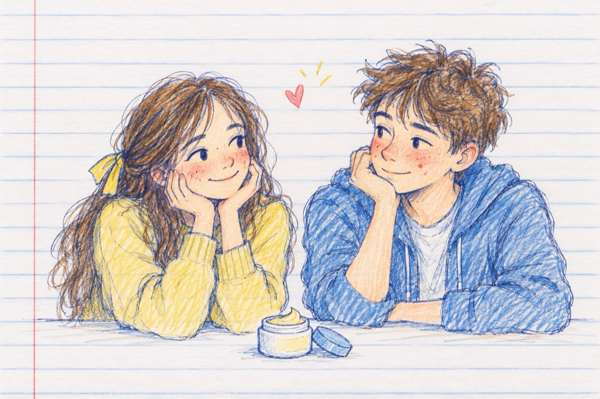

Mărturisire
Nu știu ce-i, de la o vreme
Mi-au ieșit pe față coșuri
Le tratez cu multe creme
Mama-mi spune că fac mofturi!...
Cu timpul o să te-ndrepți
dacă zici că ești bolnavă
I-am întrebat pe băieți
Ei mi-au spus că le sunt dragă!
Stau acum în cumpănă
Nu știu pe cine să cred
Poate că sunt eu de vină
Eu pe băieți mă încred.
Că și ei de la o vreme
Fără ca să facă mofturi
Fără a se da cu creme
Au fața plină de coșuri.
"Suferim" băieți și fete
Nu cred că-i o pacoste
Lucrurile-au să se-ndrepte
Leacul va fi dragoste!...
Până-atunci vom fi cuminți
Până va veni sorocul
Știm asta de la părinți
Împlinirea așa cum ne-o fi norocul!
Vasile Groza